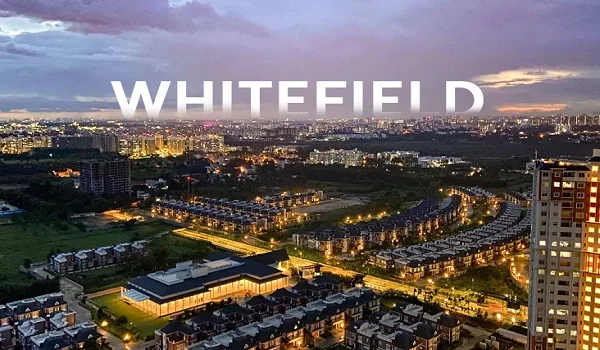

Whitefield

Whitefield has transformed from a quiet suburban locality into one of Bengaluru's most important residential and commercial destinations. Strong employment opportunities, expanding infrastructure, and continuous social development have made it a preferred choice for homebuyers. The upcoming Sobha Liora, a new Sobha Whitefield development in Immadihalli, is expected to benefit from these location advantages while offering modern residential living in one of East Bengaluru's fastest-growing neighbourhoods.
Rather than focusing only on premium housing, Sobha Liora reflects how well-planned developments are increasingly being positioned in locations where connectivity, convenience, and future growth work together.
Whitefield has remained one of Bengaluru's strongest real estate markets because it combines employment hubs with established urban infrastructure. The area is home to numerous technology parks, multinational companies, educational institutions, healthcare centres, shopping destinations, and entertainment facilities.
Its consistent infrastructure upgrades have improved daily commuting while increasing long-term residential demand. As a result, Whitefield attracts professionals, families, and investors looking for locations with both lifestyle benefits and future appreciation potential.
For any new Sobha Project in Whitefield, location plays a major role in determining long-term value, and Immadihalli has emerged as one of the area's promising residential pockets.
Immadihalli enjoys close access to major roads connecting Whitefield with other parts of Bengaluru. Residents benefit from easier travel to IT parks, commercial centres, schools, hospitals, and retail destinations while staying slightly away from the busiest commercial zones.
This balance makes the locality suitable for people seeking improved accessibility without compromising on residential comfort.
The neighbourhood around Immadihalli continues to expand with quality educational institutions, healthcare facilities, supermarkets, restaurants, and recreational spaces. Everyday necessities are available within a short distance, reducing travel time for families.
This established ecosystem strengthens the appeal of Sobha Whitefield developments planned in this micro-market.
Unlike locations that are still waiting for major infrastructure development, Whitefield already offers a mature residential environment. Sobha Liora enters the market at a time when demand is increasingly shifting towards projects located within well-developed neighbourhoods rather than isolated townships.
Being situated in Immadihalli allows the project to benefit from existing road networks, social infrastructure, and employment accessibility. These factors contribute to long-term residential convenience while supporting sustained market demand.
As a Sobha Project in Whitefield, the development is positioned in a location where infrastructure and residential growth have progressed together over several years.
Whitefield remains one of Bengaluru's largest employment centres, with thousands of professionals working across technology, finance, engineering, and business services. Living closer to these workplaces helps reduce commuting time and improves overall work-life balance.
Residents in and around Immadihalli have access to schools, hospitals, shopping centres, banks, fitness facilities, and public services. Such comprehensive infrastructure enhances daily living while supporting long-term residential demand.
Continuous public and private investments have strengthened Whitefield's infrastructure over the years. Improved transportation, expanding civic amenities, and ongoing commercial growth continue to support the area's residential market.
These long-term developments provide a favourable environment for projects such as Sobha Liora.
Homebuyers today evaluate much more than apartment layouts. They increasingly consider connectivity, neighbourhood development, lifestyle convenience, and future infrastructure before making a decision.
The location of Sobha Liora in Immadihalli aligns well with these priorities. Its position within Whitefield provides access to a mature urban ecosystem while offering the benefits of a well-established residential corridor.
Whitefield continues to remain one of Bengaluru's most dependable residential destinations due to its balanced combination of employment opportunities, infrastructure, connectivity, and lifestyle facilities. Within this evolving landscape, Sobha Liora stands out because of its strategic location in Immadihalli, where residential development is supported by strong surrounding infrastructure rather than future expectations alone.
For buyers evaluating a new Sobha Project in Whitefield, the location offers a practical mix of accessibility, convenience, and long-term urban growth, making Sobha Whitefield developments relevant for both end-users and those seeking sustainable residential value.